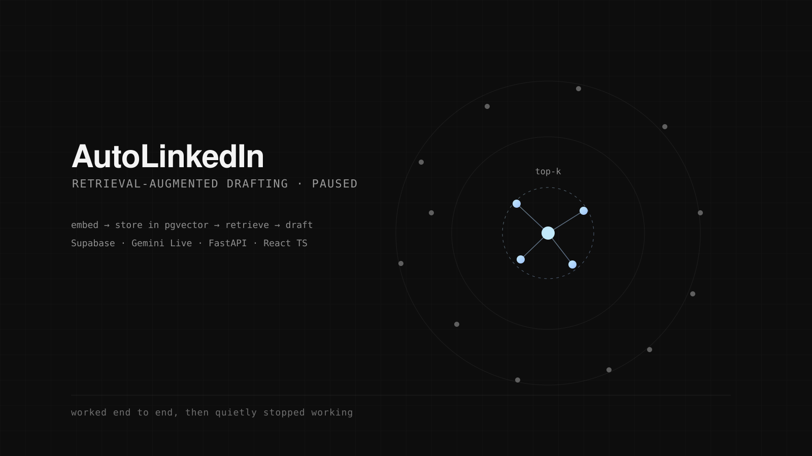

AutoLinkedIn
Writing about your own work is tedious, and the usual fix, asking a model to do it, produces posts that sound like a model. AutoLinkedIn takes a different route: it interviews you out loud, in real time, and writes from what you actually said.
The conversation runs as a genuine bidirectional voice session. Low-latency PCM16 audio streams from the browser through WebSockets and AudioWorklet-based processing into the Gemini Live API, so it interrupts, follows up and changes direction the way an interviewer does. Getting that to feel like a conversation rather than a walkie-talkie was most of the engineering.
Behind it sits a RAG layer: FastAPI, Supabase with pgvector, and Gemini embeddings over everything you have published before. That is what keeps the voice consistent across posts instead of resetting every session: the model is drafting in the context of your own back catalogue.
Generation is constrained to strict JSON structured outputs, which is what makes the result programmable rather than a blob of prose, and posts come out adapted for Spanish, English and Mandarin markets. LinkedIn OAuth 2.0 closes the loop: review, edit and publish in one click from a React dashboard. Database interactions and AI edge cases are covered by pytest and pytest-asyncio.
It is currently paused, with parts of it broken: API surfaces moved underneath it and I never wrote enough tests around the integration boundaries to tell me exactly where it gave way. The retrieval and voice-loop design were sound, though, and I would build both the same way again.
- Stack
- React, TypeScript, FastAPI, WebSockets, AudioWorklet, Supabase pgvector, Gemini Live
- Status
- Paused · partially broken
- Year
- 2025
- Code
- AutoLinkedin

Next: Agentic Reasoning Traces